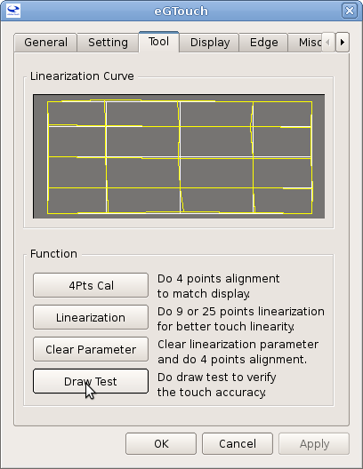
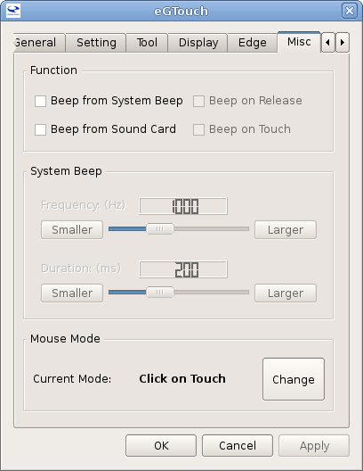

Configurar pantalla touch Bematech en Debian
Publicado el mié 12 diciembre 2012 en Tutorial Linux • 4 min de lectura
Se realiza la instalación de Debian Squeeze con la pantacha táctil conectada. en este caso la pantalla es una pantalla táctil por medio de una conexión USB.
Al terminar la instalación se ejecuta el comando lsusb para ver como se detecta la pantalla:
lsusb
Bus 004 Device 002: ID 0eef:0001 D-WAV Scientific Co., Ltd eGalax TouchScreen
Es un dispositivo de la Empresa eGalax. Se visita la página de eGalax para bakar los drivers para Linux,el driver es eGTouch_v2.5.2107.L-x, este driver es el que tiene soporte para kernel superior a 2.6.24.
Instalar paquetes necesarios para la configuración del touch:
Es necesario instalar librerías de xorg y los headers del kernel que tiene Squeeze.
apt-get install xserver-xorg-input-evtouch xinput xserver-xorg-dev xserver-xorg-input-evdev-dev xserver-xorg-input-evdev xserver-xorg-input-synaptics-dev linux-headers-2.6.32-5-686
Al tener el archivo comprimido en el equipo se descomprime:
tar -xvzf eGTouch_v2.5.2107.L-x.tar.gz
Se entra en el directorio del driver:
cd eGTouch_v2.5.2107.L-x/
Ahora se ejecuta el script setup.sh el cual es una ayuda para el proceso de Instalación del driver:
sudo sh setup.sh
A continuación se sigue las instrucciones del instalador:
Se resaltará la parte de las preguntas del instalador.
(*) Driver installer for touch controller
(*) Script Version = 1.04.2013
(I) Check user permission: root, you are the supervisor.
(I) Platform application binary interface = i686
(W) X server detected.
Declaration and Disclaimer
The programs, including but not limited to software and/or firmware
(hereinafter referred to "Programs" or "PROGRAMS", are owned by
eGalax_eMPIA Technology Inc. (hereinafter referred to EETI) and are
compiled from EETI Source code. EETI hereby grants to licensee a
personal, non-exclusive, non-transferable license to copy, use and
create derivative works of Programs for the sole purpose in
conjunction with an EETI Product, including but not limited to
integrated circuit and/or controller. Any reproduction, copies,
modification, translation, compilation, application, or representation
of Programs except as specified above is prohibited without the
express written permission by EETI.
Disclaimer: EETI MAKES NO WARRANTY OF ANY KIND, EXPRESS OR IMPLIED,
WITH REGARD TO PROGRAMS, INCLUDING, BUT NOT LIMITED TO, THE IMPLIED
WARRANTIES OF MERCHANTABILITY AND FITNESS FOR A PARTICULAR PURPOSE.
EETI reserves the right to make changes without further notice to the
Programs described herein. Licensee agrees that EETI does not assume
any liability, damages or costs, including but not limited to attorney
fees, arising out from Programs themselves or those arising out from
the application or combination Programs into other products or
circuit. The use or the inclusion of EETI's Programs implies that the
Licensee assumes all risk of such use and in doing so indemnifies EETI
against all charges, including but not limited to any claims to
infringement of any third party's intellectual property right.
Do you agree with above patent declaration?
[Y] Yes, I agree. [N] No, I don't agree.
Y
(Q) Which interface controller do you use?
(I) [1] RS232 [2] USB [3] PS2 : 2
(I) Please confirm the touch controller is linked with your device.
Press [Enter] key to continue..........
(I) Found /etc/rc.local file.
(I) Found a HID compliant touch controller.
(I) X.Org X server 1.7.7
(I) X verion is 1.7.6 upwards
(I) Found uinput.ko in modules.
(I) Attach uinput at boot.
(I) Add uinput module into /etc/modules file.
(I) Place eGTouch driver archive to /usr/local/eGTouch32withX.
(I) Create eGTouch daemon shortcut in /usr/bin.
(I) Create eGTouchU tool shortcut in /usr/bin.
(I) Create eCalib tool shortcut in /usr/bin.
(I) Append eGTouch daemon execution into /etc/rc.local.
(Q) How many controllers do you want to plug-in to system? [1-10]
(I) Default [1]:
(I) Device Nums is set to 1
(I) Copy udev rule: 52-egalax-virtual.conf to /usr/share/X11/xorg.conf.d.
(I) Create eGTouchU shortcut in application list.
(I) Driver installation completed. Setup version 1.04.2013.
(I) Please reboot the system.
--------------------------------------------------------------------
Lo que queda es reiniciar el equipo.
Ahora viene el proceso de configuración del touch ejecutando el comando eGTouchU desde la consola:
eGTouchU
Este despliega una herramienta gráfica que permite configurar y calibrar el touch:
La figura muestra la pestaña general donde debe aparecer el controlador USB.

La pestaña Setting se deja tal cual viene pre configurada:

La pestaña Tool es la que permite calibrar la pantalla toch, se selecciona la Función de Linearización con 25 puntos de calibración:


En la siguiente figura se muestra la pantalla en el momento de calibrarla:

Ahora se selecciona la prueba de dibujo para verificar el correcto funcionamiento de la pantalla táctil:

En la figura se muestra el funcionamiento de la pantalla desde la prueba de dibujo:
En la pestaña Display se selecciona modo full pantalla:

En la pestaña Edge no se realizan cambios:

En la pestaña Misc sólo se cambia el Modo del Mouse a Click on Touch:

Luego de esto se pueden aplicar los cambios y reiniciar el equipo. Con esto ya se tiene la pantalla táctil funcionando.
¡Haz tu donativo! Si te gustó el artículo puedes realizar un donativo con Bitcoin (BTC) usando la billetera digital de tu preferencia a la siguiente dirección: 17MtNybhdkA9GV3UNS6BTwPcuhjXoPrSzV
O Escaneando el código QR desde la billetera: